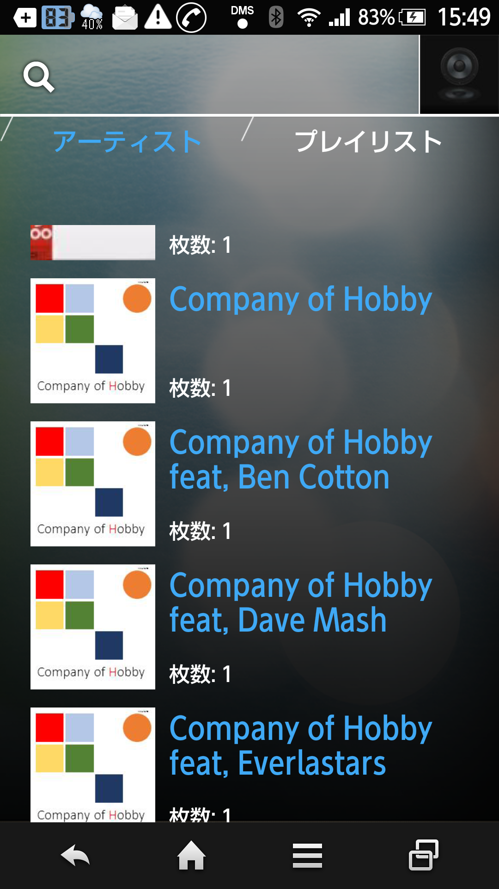

|
Music player usable commonly MaraSongs |
|
| List of all songs | ||
| MaraSongs makes an all songs list (original playlist) to perform all songs reproduction without stopping it every album of the same artist. | ||
The normal music player |
|||
| . | As for the music file, each musical piece file is displayed in the folder of the / album name, the bottom under the folder of the artist name that is usually performed credit of, and the music player regenerates all songs according to the row. |

|
|
|  | |||
|
For example, when Artist folder is distributed by guest participation, the album name folder located below is divided and is not regenerated as one piece of album in the normal music players consecutively. In addition, the players whom the consecutive reproduction stops by a divided album unit are often found. |
|||
| . |
By a name not to let tag information written in at a music player and a file to use for Ripping divide an album by names such as "album artist" separately from displayed excellent business, it is managed. However, because data table (MediaStore) managing the music file in Android does not have the concept; such as the above is in a condition. |

I manage the CD which I purchased with a PC |
|
|
Therefore make the original database which set an album artist (artist name for list up) in MaraSongs, and is proper; line up, and realize all songs consecutive reproduction by the order. In addition, I can set any list up order by using the database as a playlist. |
|||
The timing when a list of all songs is made |
|||
| . |
Three timings when MaraSongs makes a list of all songs
*When I have access to USB to a PC, a user cannot recognize memory from application when I use the memory optionally. Please take off a USB cable on the occasion of the use by list of "all songs" update. |
||
| Summary of the processing |
or 


|
||
I display confirm dialog rank to be able to stop it because it is processing to take time when it started by erroneous operation.
|
|||
| Confirmation of former data |
I confirm the information of the music file which Android recognizes and correct the part which lacked.
|
||
| Making of the key field (album artist) for list up |
I copy an artist name to contribute large of the all songs extraction and process it so that proper sorting is possible. Specifically
|
||
| Handling of compilation | In one piece of album
|
||
| Reflection of the list up editing |
I can revise the linkage with the artist whom an album and the user whom one piece did not have by a correction until the above set optionally by list up editing that is displayed when long shot tapped a list item.
Because it is stored a database, this modified result lets you reflect a correction by the intention of the user after having updated a list of all songs. | ||
| Finish |
| ||